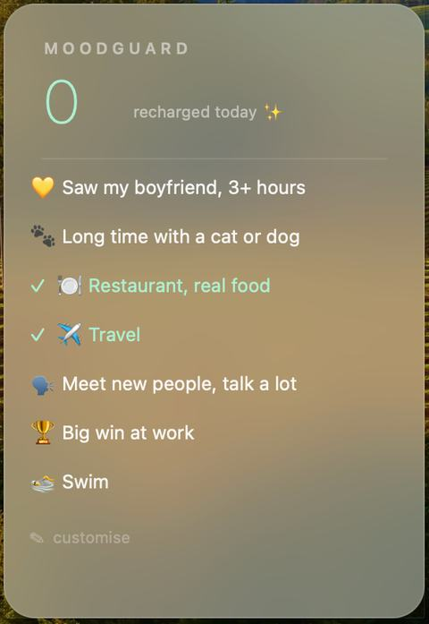
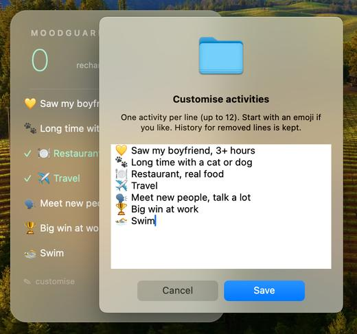

Selected work
Pick a star, open a project.
Tap or hover a star to open a project
I design human-centred innovations that turn complex challenges into real-world solutions. Recognised by the James Dyson Award, covered by Reuters and Dezeen.
London-based product designer and innovation researcher, with a double master's in Innovation Design Engineering from Imperial College London and the Royal College of Art. My work sits at the intersection of people, science and design. I'm currently building Urify, a healthcare innovation incubated at Imperial College London.
Two projects, one question underneath both: how much should the system decide, and how do you make that boundary legible enough to trust? My thinking on it, from 1Soul to the Xiaomi Auto cockpit.
Read my thinkingOutside client work I use AI-assisted coding to make small pieces of real software for myself. Not case studies, just things I actually use. I'll add more here as I make them.
I work alone at home for days at a time, forget to eat and rest, and end up in a low, irritable mood I can't explain. MoodGuard is a glass widget that sits on my desktop and tracks it in real time: pick your own recharge activities, one click to check in, a big number counting days since the last one. Miss 14 days and it warns you before the mood hits, not after. Free to download and fully customisable. Try it.


Open to product design roles and collaborations in London and remotely.